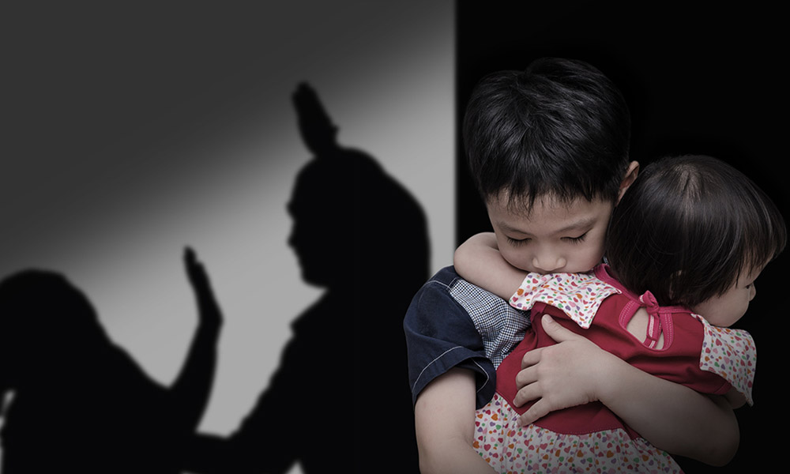

Como violencia intrafamiliar se denomina el tipo de violencia que ocurre entre miembros de una familia, y que puede tener lugar en el entorno doméstico o fuera de él. En este sentido, la violencia intrafamiliar se registra cuando se producen situaciones de abuso o maltrato entre personas emparentadas, bien por consanguinidad, bien por afinidad. Como tal, podemos decir que se ha producido un episodio de violencia doméstica cuando se han ocasionado daños a la integridad emocional, psicológica o física de una persona. Los tipos de violencia más comunes que tienen lugar en una familia son los de padres a hijos y los de maridos a mujeres, aunque también pueden ocurrir de forma inversa, o involucrar a otros parientes, como tíos, primos o abuelos. Las causas que motivan la violencia intrafamiliar son variadas, aunque por lo general se produce como forma de imponer el poder, la autoridad o el control a un miembro de la familia.
La violencia familiar es un fenomeno social que ocurre en casi todos los paises del mundo y se define como el uso intencionado y repetido de la fuerza fisica o psicologica para controlar, manipular o atentar en contra de algun integrante de la familia.
Esta violencia puede manifestarse tambien como abuso psicologico, sexual o economico y se da entre personas relacionadas afectivamente dentro del hogar. Violencia en la familia es un apartado que contribuye a la construccion de una cultura de igualdad en la familia, de este modo, el proposito es informarte y orientarte desde diferentes ambitos como la educacion, la salud, la prevencion de la violencia y sin distincion de circunstancias para que tanto mujeres, hombres, ninas y ninos, puedan tener una vida libre de violenca.
